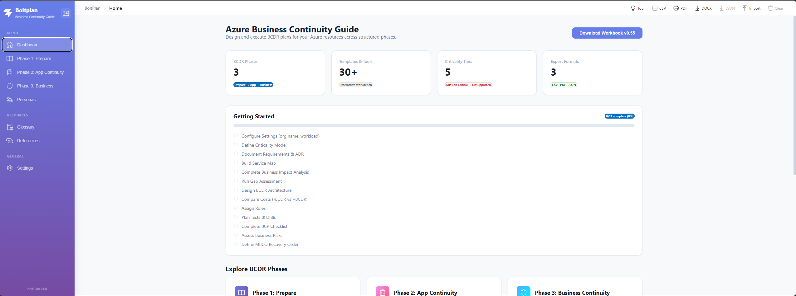
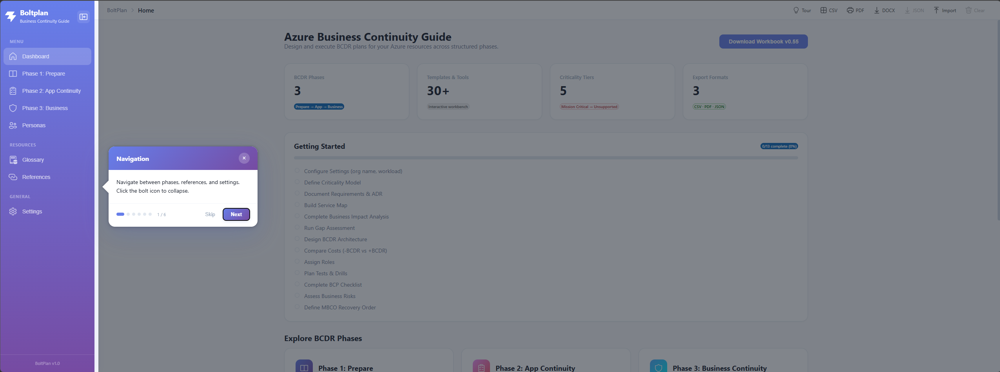
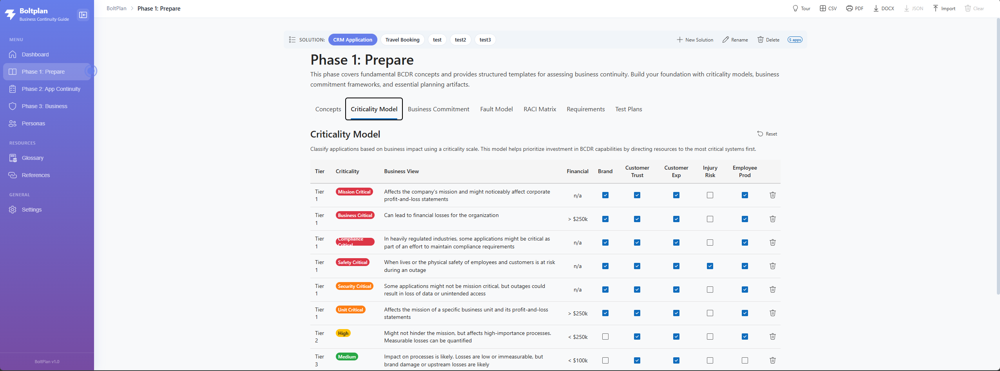
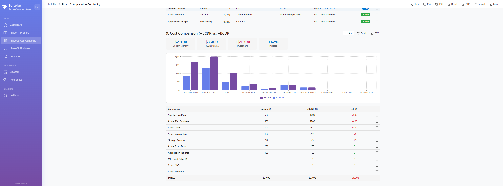
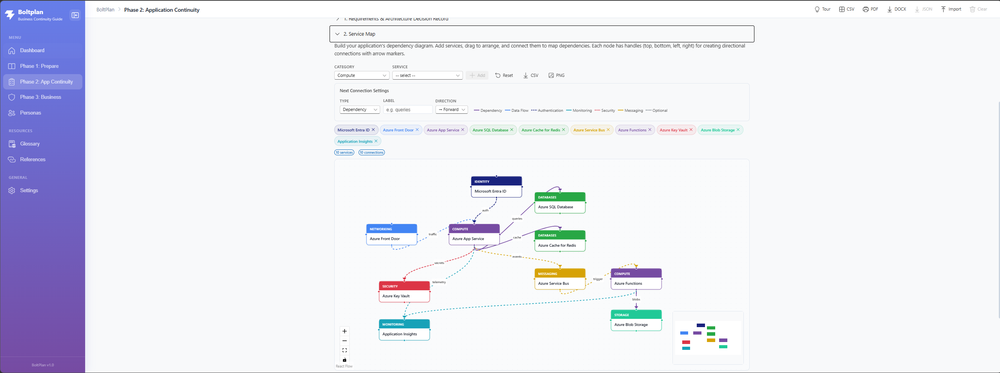
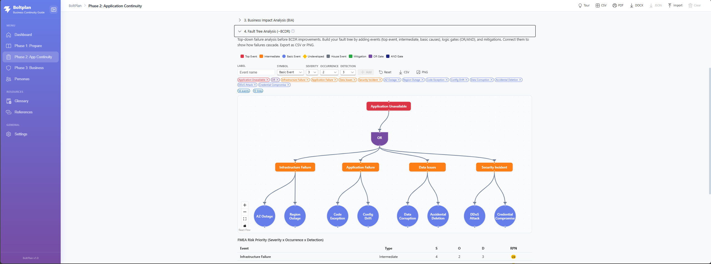
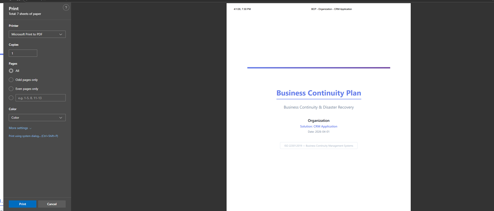

1Get Started in 60 seconds
BoltPlan runs entirely in your browser. No backend, no install. All data lives in localStorage, namespaced per solution.
- Clone & install
git clone <repo> && cd web-app && npm install - Run the dev server
npm run dev— then open http://localhost:5173. - Take the guided tour — it launches automatically on first run. Re-launch any time from the Tour button.
- Start with the Sample Solution to learn the patterns, then create your own with + New Solution.

2Take the Guided Tour
A branded React Joyride walkthrough explains every section in context. Skip and re-run any time.

3Work With Multiple Solutions
Each Solution is an isolated workspace — its own BIA, its own diagrams, its own BCP. Switch instantly from the chip bar.
Isolated data
Every key is stored under abcg_{solutionId}_….
New Solution
Click + New Solution in the toolbar to scaffold a fresh workbench.
Rename
Rename updates display name without touching data.
Switch instantly
Clicking a chip remounts the active page so all data is fresh.
4Phase 1 — Prepare
Set the foundations: criticality tiers, business commitments, RACI, and test cadence. Maps to ISO 22301 Clauses 4–7.

Exit checklist
- Criticality tiers approved by business sponsor.
- Business Commitment signed off by legal / product.
- RACI matrix populated with named individuals, not just role titles.
- Test cadence agreed.
5Phase 2 — Application Continuity
The heart of BoltPlan — three sub-tabs that mirror the WAF Reliability flow: Assess → Implement → Test.
Assess
Requirements · Service Map · BIA · Fault Tree · Gap Assessment · Metrics
Implement
Response · Architecture · Cost · Metrics · Fault Tree +BCDR · Contingency · Roles · DR Runbook · Severity Matrix · Comms Plan
Test
Test Summary · Drill · UAT · Communication · Maintenance

6Build the Service Map
Drag-and-drop React Flow canvas with 100+ Azure services across 14 categories. Seven connection types let you express read/write, sync/async, control-plane, etc.

- Pick services from the Azure catalog drawer and drop them on the canvas. Don't see what you need? Select + Custom category… or + Custom service… in the dropdowns and type any free-form name (e.g. Mainframe, Oracle DB, SAP S/4HANA, On-prem AD).
- Connect them using one of 7 typed edges. Set direction, label, and color.
- Layout auto-snaps. Use the toolbar to fit-to-view and align.
- Export PNG for ADR documents or audit packages — the diagram is also embedded in the PDF/DOCX BCP.
7Run Fault Tree Analysis (IEC 61025)
Top-down deductive failure analysis using official symbols. Score each leaf with FMEA (Severity × Occurrence × Detection = RPN), then compare −BCDR and +BCDR.

| FMEA dimension | Scale | What it asks |
|---|---|---|
| Severity | 1–10 | How bad is the impact if this failure happens? |
| Occurrence | 1–10 | How often is it likely to happen? |
| Detection | 1–10 | How likely are you to catch it before customers do? (10 = very unlikely) |
| RPN | 1–1000 | S × O × D — prioritize anything ≥ 100. |
8DR Runbook · Severity Matrix · Comms Plan
The three WAF-aligned sections in Phase 2 Implement that auditors look at first. Keep them consistent — Sev 1 in the matrix must equal P0 in the comms plan.
Failover Runbook
Numbered, owner-stamped, time-boxed steps for activating DR.
Failback Runbook
Mirror of failover with explicit data-consistency checks before cutover.
Severity Matrix
Sev 1–4 with examples, response SLAs, and escalation paths.
Communication Plan
Who is told, via which channel, at which milestone.
9Phase 3 — Business Continuity
The business-level view: portfolio recovery order, risk register, calendar, and ongoing maintenance.
Planning & Risk
BCP checklist (with progress %) and 5×5 risk matrix.
MBCO & Recovery Order
Minimum viable services + sequence to bring them back.
Operations
Calendar, dashboard (auto-populated), and append-only activity log.
Maintenance
Review schedule with status cycling. Plan reviews, BIA refreshes, drills.
10Exports & Backup
Generate audit-ready artifacts in one click. The PDF and DOCX both follow the ISO 22301 outline section-for-section.
| Format | Use case | Notes |
|---|---|---|
| Annual BCP sign-off, audit pack | 13 sections + appendices, all populated from your data. | |
| DOCX | Redlining with legal / compliance | Same outline as PDF, fully editable. |
| CSV | Bulk review in Excel | BOM-prefixed for proper Excel rendering. |
| JSON | Backup, version control, peer review | Round-trips Service Map & Fault Tree diagrams. Import re-creates the solution. |
| PNG | Slides, ADRs, ticket attachments | Direct from React Flow viewport. |

11Operating Cadence
A monthly heartbeat plus an annual full cycle keeps the plan alive instead of shelfware.
| Week | Activity |
|---|---|
| Week 1 | Review open findings from the last drill. |
| Week 2 | Walk one runbook with the on-call team. |
| Week 3 | Verify Composite SLA still matches the deployed architecture. |
| Week 4 | Export PDF + JSON. Attach to the monthly governance pack. |
12Compliance Crosswalk
Each BoltPlan artifact maps cleanly to the controls auditors expect to see.
| BoltPlan artifact | ISO 22301 | WAF Reliability | NIST 800-34 | DORA |
|---|---|---|---|---|
| Criticality Model | 8.2.2 | Tier targets | Step 2 | Art. 8 |
| BIA | 8.2.2 | Define targets | Step 2 | Art. 8 |
| Service Map | 8.2.3 | Identify flows | Step 2 | — |
| Fault Tree (±BCDR) | 8.3.3 | Failure-mode analysis | Step 3 | Art. 25 |
| Composite SLA | 8.3.3 | Composite SLA | Step 3 | Art. 11 |
| DR Runbook | 8.4.3 | Document procedures | Step 4 | Art. 11 |
| Severity Matrix | 8.4.2 | Severity model | Step 4 | Art. 17 |
| Communication Plan | 8.4.3 d) | — | Step 4 | Art. 14 |
| Drill record | 8.5 | Test for resiliency | Step 5 | Art. 24–26 |
| BCP (PDF/DOCX) | 8.4 | — | Step 4 | Art. 11 |
For the full guideline with framework definitions, exit criteria per phase, and an extended reference list, see BCDR-Usage-Guideline.md.
✓You're ready to build a BCP
Launch the app, pick a solution, and follow Phase 1 → 2 → 3 in order. The PDF will be ready when you are.